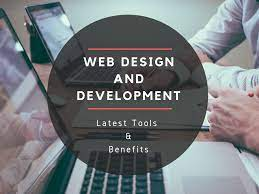

about.hmyl about project gallery FreeCodeCamp
As I sat in front of my laptop, fingers hovering over the keyboard, I felt a thrill of excitement mixed with a dash of nervousness. I had just discovered Free Code Camp, a magical portal to the world of coding. My journey was about to begin. I had always been fascinated by technology, but never thought I could create it myself. That was for genius programmers with years of experience. But Free Code Camp's promise of learning by doing, and its supportive community, drew me in. I started with HTML/CSS, building simple web pages that made me feel like a digital artist. Each challenge overcome, each project completed, fueled my confidence. I devoured tutorials, participated in forums, and connected with fellow campers. Soon," "> I ventured into JavaScript, and the world of interactivity unfolded. My code came alive, responding to user inputs, animating, and calculating. The sense of empowerment grew. One fateful night, while working on a project, I encountered a stubborn bug. Hours passed, and frustration mounted. Just as I was about to give up, a fellow camper, Rachel, offered guidance in the chat room. Her patience and expertise helped me squash the bug. That moment sparked something within me. I realized coding wasn't just about writing code; it was about collaboration, problem-solving, and community. Free Code Camp had become more than a platform – it was a tribe. As I progressed through the curriculum, my skills improved, and so did my projects. I built a simple game, a weather app, and even contributed to open-source projects. Each achievement reinforced my determination. Six months flew by, and I earned my first certification. Tears of joy mixed with pride as I shared the news with my family and friends. They didn't fully understand what I did, but they saw the transformation in me – from hesitant beginner to confident coder. Today, I continue on this journey, tackling new challenges, exploring advanced topics, and mentoring others. Free Code Camp remains my trusted companion, a reminder that growth happens through perseverance and support. I am no longer just a newcomer; I am a Code Crusader, armed with skills, passion, and a community that inspires me to create, innovate, and make a difference. Your Turn
As you read this story, remember that your own coding journey is unfolding. Free Code Camp is your launching pad, and the world of programming awaits. Stay curious, keep learning, and never hesitate to ask for help. Your fellow campers, mentors, and the broader coding community are cheering you on. You are a Code Crusader in the making. What do you think? Would you like me to modify anything or create a new story? s I sat in front of my laptop, fingers hovering over the keyboard, I felt a thrill of excitement mixed with a dash of nervousness. I had just discovered Free Code Camp, a magical portal to the world of coding. My journey was about to begin. I had always been fascinated by technology, but never thought I could create it myself. That was for genius programmers with years of experience. But Free Code Camp's promise of learning by doing, and its supportive community, drew me in. I started with HTML/CSS, building simple web pages that made me feel like a digital artist. Each challenge overcome, each project completed, fueled my confidence. I devoured tutorials, participated in forums, and connected with fellow campers. Soon, I ventured into JavaScript, and the world of interactivity unfolded. My code came alive, responding to user inputs, animating, and calculating. The sense of empowerment grew. One fateful night, while working on a project, I encountered a stubborn bug. Hours passed, and frustration mounted. Just as I was about to give up, a fellow camper, Rachel, offered guidance in the chat room. Her patience and expertise helped me squash the bug.  That moment sparked something within me. I realized coding wasn't just about writing code; it was about collaboration, problem-solving, and community. Free Code Camp had become more than a platform – it was a tribe. As I progressed through the curriculum, my skills improved, and so did my projects. I built a simple game, a weather app, and even contributed to open-source projects. Each achievement reinforced my determination. Six months flew by, and I earned my first certification. Tears of joy mixed with pride as I shared the news with my family and friends. They didn't fully understand what I did, but they saw the transformation in me – from hesitant beginner to confident coder. Today, I continue on this journey, tackling new challenges, exploring advanced topics, and mentoring others. Free Code Camp remains my trusted companion, a reminder that growth happens through perseverance and support. I am no longer just a newcomer; I am a Code Crusader, armed with skills, passion, and a community that inspires me to create, innovate, and make a difference. Your Turn As you read this story, remember that your own coding journey is unfolding. Free Code Camp is your launching pad, and the world of programming awaits. Stay curious, keep learning, and never hesitate to ask for help. Your fellow campers, mentors, and the broader coding community are cheering you on. You are a Code Crusader in the making.
What do you think? Would you like me to modify anything or create a new story? s I sat in front of my laptop, fingers hovering over the keyboard, I felt a thrill of excitement mixed with a dash of nervousness. I had just discovered Free Code Camp, a magical portal to the world of coding. My journey was about to begin. I had always been fascinated by technology, but never thought I could create it myself. That was for genius programmers with years of experience. But Free Code Camp's promise of learning by doing, and its supportive community, drew me in. I started with HTML/CSS, building simple web pages that made me feel like a digital artist. Each challenge overcome, each project completed, fueled my confidence. I devoured tutorials, participated in forums, and connected with fellow campers. Soon, I ventured into JavaScript, and the world of interactivity unfolded. My code came alive, responding to user inputs, animating, and calculating. The sense of empowerment grew. One fateful night, while working on a project, I encountered a stubborn bug. Hours passed, and frustration mounted. Just as I was about to give up, a fellow camper, Rachel, offered guidance in the chat room. Her patience and expertise helped me squash the bug. That moment sparked something within me. I realized coding wasn't just about writing code; it was about collaboration, problem-solving, and community. Free Code Camp had become more than a platform – it was a tribe. As I progressed through the curriculum, my skills improved, and so did my projects. I built a simple game, a weather app, and even contributed to open-source projects. Each achievement reinforced my determination. Six months flew by, and I earned my first certification. Tears of joy mixed with pride as I shared the news with my family and friends. They didn't fully understand what I did, but they saw the transformation in me – from hesitant beginner to confident coder. Today, I continue on this journey, tackling new challenges, exploring advanced topics, and mentoring others. Free Code Camp remains my trusted companion, a reminder that growth happens through perseverance and support. I am no longer just a newcomer; I am a Code Crusader, armed with skills, passion, and a community that inspires me to create, innovate, and make a difference. Your Turn
As you read this story, remember that your own coding journey is unfolding. Free Code Camp is your launching pad, and the world of programming awaits. Stay curious, keep learning, and never hesitate to ask for help. Your fellow campers, mentors, and the broader coding community are cheering you on. You are a Code Crusader in the making. What do you think? Would you like me to modify anything or create a new story? s I sat in front of my laptop, fingers hovering over the keyboard, I felt a thrill of excitement mixed with a dash of nervousness. I had just discovered Free Code Camp, a magical portal to the world of coding. My journey was about to begin. I had always been fascinated by technology, but never thought I could create it myself. That was for genius programmers with years of experience. But Free Code Camp's promise of learning by doing, and its supportive community, drew me in. I started with HTML/CSS, building simple web pages that made me feel like a digital artist. Each challenge overcome, each project completed, fueled my confidence. I devoured tutorials, participated in forums, and connected with fellow campers. Soon, I ventured into JavaScript, and the world of interactivity unfolded. My code came alive, responding to user inputs, animating, and calculating. The sense of empowerment grew. One fateful night, while working on a project, I encountered a stubborn bug. Hours passed, and frustration mounted. Just as I was about to give up, a fellow camper, Rachel, offered guidance in the chat room. Her patience and expertise helped me squash the bug. That moment sparked something within me. I realized coding wasn't just about writing code; it was about collaboration, problem-solving, and community. Free Code Camp had become more than a platform – it was a tribe. As I progressed through the curriculum, my skills improved, and so did my projects. I built a simple game, a weather app, and even contributed to open-source projects. Each achievement reinforced my determination. Six months flew by, and I earned my first certification. Tears of joy mixed with pride as I shared the news with my family and friends. They didn't fully understand what I did, but they saw the transformation in me – from hesitant beginner to confident coder. Today, I continue on this journey, tackling new challenges, exploring advanced topics, and mentoring others. Free Code Camp remains my trusted companion, a reminder that growth happens through perseverance and support. I am no longer just a newcomer; I am a Code Crusader, armed with skills, passion, and a community that inspires me to create, innovate, and make a difference. Your Turn As you read this story, remember that your own coding journey is unfolding. Free Code Camp is your launching pad, and the world of programming awaits. Stay curious, keep learning, and never hesitate to ask for help. Your fellow campers, mentors, and the broader coding community are cheering you on. You are a Code Crusader in the making.
What do you think? Would you like me to modify anything or create a new story? s I sat in front of my laptop, fingers hovering over the keyboard, I felt a thrill of excitement mixed with a dash of nervousness. I had just discovered Free Code Camp, a magical portal to the world of coding. My journey was about to begin. I had always been fascinated by technology, but never thought I could create it myself. That was for genius programmers with years of experience. But Free Code Camp's promise of learning by doing, and its supportive community, drew me in. I started with HTML/CSS, building simple web pages that made me feel like a digital artist. Each challenge overcome, each project completed, fueled my confidence. I devoured tutorials, participated in forums, and connected with fellow campers. Soon, I ventured into JavaScript, and the world of interactivity unfolded. My code came alive, responding to user inputs, animating, and calculating. The sense of empowerment grew. One fateful night, while working on a project, I encountered a stubborn bug. Hours passed, and frustration mounted. Just as I was about to give up, a fellow camper, Rachel, offered guidance in the chat room. Her patience and expertise helped me squash the bug. That moment sparked something within me. I realized coding wasn't just about writing code; it was about collaboration, problem-solving, and community. Free Code Camp had become more than a platform – it was a tribe. As I progressed through the curriculum, my skills improved, and so did my projects. I built a simple game, a weather app, and even contributed to open-source projects. Each achievement reinforced my determination. Six months flew by, and I earned my first certification. Tears of joy mixed with pride as I shared the news with my family and friends. They didn't fully understand what I did, but they saw the transformation in me – from hesitant beginner to confident coder. Today, I continue on this journey, tackling new challenges, exploring advanced topics, and mentoring others. Free Code Camp remains my trusted companion, a reminder that growth happens through perseverance and support. I am no longer just a newcomer; I am a Code Crusader, armed with skills, passion, and a community that inspires me to create, innovate, and make a difference. Your Turn As you read this story, remember that your own coding journey is unfolding. Free Code Camp is your launching pad, and the world of programming awaits. Stay curious, keep learning, and never hesitate to ask for help. Your fellow campers, mentors, and the broader coding community are cheering you on. You are a Code Crusader in the making. What do you think? Would you like me to modify anything or create a new story?
{kind=link}